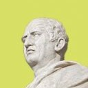
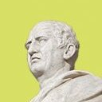

Marcus Tullius Cicero ruslankondrachuk01@gmail.com
Roman statesman, lawyer, scholar, philosopher
· 20 min read

Marcus Tullius Cicero ruslankondrachuk01@gmail.com
Roman statesman, lawyer, scholar, philosopher
· 20 min read
In Orator, Cicero depicts several models for speakers. Cicero states to the Romans the importance of searching and discovering their own sense of rhetoric. “I am sure, the magnificence of Plato did not deter Aristotle from writing, nor did Aristotle with all his marvelous breadth of knowledge put an end to the studies of others”. Cicero encouraged the plebeians through his writing, “Moreover, not only were outstanding men not deterred from undertaking liberal pursuits, but even craftsmen did not give up their arts because they were unable to equal the beauty of the picture of Ialysus . . . .” Cicero proposes that rhetoric cannot be confined to one specific group but rather outlines a guide that will lead to the creation of successful orators across Roman society.
In Orator, Cicero also addressed the accusation lodged by his fellow senators, including Brutus, that he was an “Atticist.” Cicero addresses this claim by saying that he is too independent and bold to be associated with Atticism, producing his own unique style. Cicero claims the perfect orator creates his own “elocutio,” or diction and style, rather than following this movement.
Cicero states that all five canons are equally important. Throughout the text, Cicero advises his Roman audience on how to form proper oratory by formal guidelines but also how to specialize individually in their own sense of oratory. Orator is written with ideas ranging from the construction of arguments to rhetorical performance. In relation to other Ciceronian works on rhetoric, Orator receives less treatment with scarce research compared to other rhetorical works.